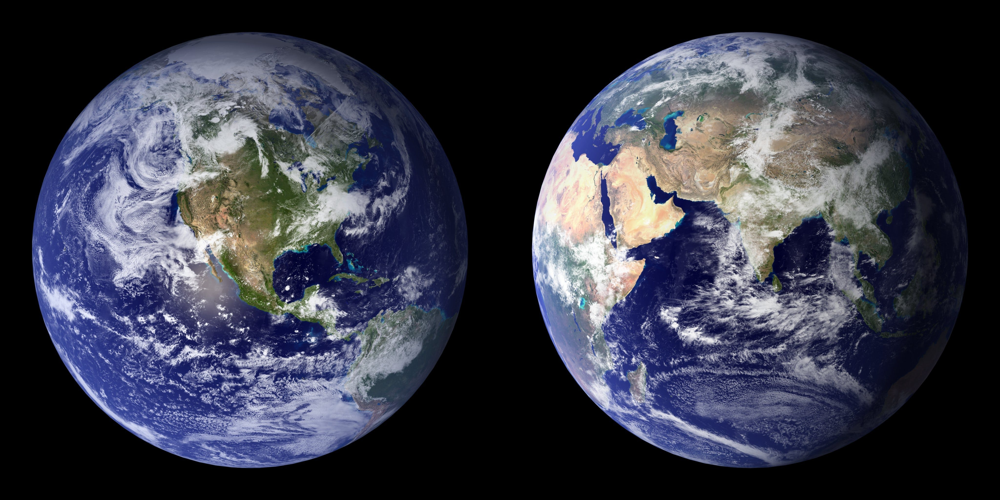

|  |
Historia:Por simple que pueda parecer, el nombre de nuestro planeta, no obstante, también tiene un origen en la mitología griega. Así, en este caso, los antiguos griegos denominaron a la Tierra en honor a la diosa Gea, la cual era adorada como la creadora del universo y la madre, tanto de los dioses primordiales, los titanes, como de los primeros humanos. Al igual que sucede con el resto de planetas, posteriormente los romanos la bautizaron con el nombre de su diosa equivalente, Terra, el cual ha transcendido hasta el presente con las evidentes adaptaciones. Nuestro hogar, la Tierra, es el quinto planeta más grande y el tercero en cercanía al Sol del sistema solar. Entre otras cualidades como la rotación de su eje respecto a la elíptica, la composición de su atmósfera rica en oxígeno o la presencia de agua líquida, esta distancia de la Tierra al Sol -situada dentro de la zona de habitabilidad de una estrella- es la responsable de que nuestro planeta sea el único del sistema solar en el que hasta el momento se haya encontrado vida. De hecho, en la Tierra se suceden una gran cantidad de características que hacen posible la vida. Por ejemplo, la atmósfera de la Tierra, la cual también nos protege de la radiación procedente del Sol y del espacio, está compuesta por un 78 % de nitrógeno, un 21 % de oxígeno y un 1 % de otros ingredientes: el equilibrio perfecto para respirar y vivir. Los vastos océanos de la Tierra proporcionaron un lugar conveniente para que comenzara la vida hace unos 3.800 millones de años. La Tierra es del mismo modo el único planeta del sistema solar con una sola luna, la cual es, en muchos sentidos, responsable de hacer de la Tierra un hogar habitable al regir las mareas o estabilizar la oscilación de nuestro planeta, lo que ha hecho que el clima sea menos variable durante miles de años. |